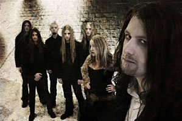

Entrevista de Johan e Anders à Bas Kanij - Outubro de 2007
Por que o nome da banda era Kerberos e houve essa mudança do Black Metal para um estilo mais obscuro? Johan: Simplesmente porque encontramos outra banda com o mesmo nome. Além disso era hora de mudar. Realmente não sei como aconteceu. Pra ser sincero, Kerberos era só uma banda experimental sem qualquer estilo específico. Assim, pareceu adequado apenas mudar o nome.
Como Lisa se uniu a banda? Anders: Bem, nós a ouvimos cantar em sua banda anterior e gostamos imediatamente de sua voz, achamos que se ajustaria bem com a nossa música e ainda não tínhamos uma vocalista feminina.
Como aconteceu a negociação com a Napalm Records? Johan: Nós enviamos uma demo que era, de fato, surpreendente. Até então nós éramos um pouco preguiçosos. Mas decidimos enviar alguns trabalhos a algumas gravadoras e a Napalm respondeu. Nada mais, nada menos.
Por que motivo gravaram a música de Ekseption On Sunday They Will Kill The World no álbum Black Halo? Johan: (risos) Isso tudo remete aos meus pais que tinham esse álbum quando jovens. Eu costumava ouvi-los bastante. Particularmente, essa é a minha canção preferida porque é pesada e tem esse sentimento sombrio. Além do mais tem uma letra diferente que enlouquece.
Na maior parte do tempo, as letras são poéticas e remetem ao romantismo literário de Lord Byron e William Blake no auge de suas carreiras. Por que a fascinação por este período? Anders: Eu não posso falar por todos, mas eu suponho que gosto tanto desse período porque pessoas como Byron eram tão talentosas que podiam criar uma atmosfera apenas com uma palavra. É simplesmente fascinante. Mas não estou preso a esse tipo de escrita. Para o novo álbum eu tentei ser um pouco mais simples, escrevendo sobre assuntos que as pessoas possam relacionar mais facilmente.
Ao longo dos anos a banda passou por algumas mudanças na formação. Atualmente, é forte o suficiente para permanecer assim? Johan: Acredito que sim. Você nunca pode ter certeza, mas agora parece estável. Somos todos amigos e viemos da mesma região, e isso é uma base sólida. Não queremos ninguém de fora porque estamos muito unidos.
Qual a lição mais importante que a música lhe trouxe? Anders: Que você deve seguir seu próprio caminho. Não deixe os outros decidirem o que você deve fazer. Seja leal aos seus objetivos e não tente ser uma pessoa que não é. No fim, você será lembrado pelas coisas que fez e não há como escapar.
No álbum Arcane Rain Fell, Ryan Henry participou recitando alguns versos. Qual era sua intenção e por que você o escolheu? Johan: Nós o conhecemos há algum tempo. Antes da gravação do álbum nós descobrimos que ele tem um grande voz narrativa, do tipo que nós estávamos observando. Nós perguntamos se ele estava interessado e como ele se mostrou, estava lançado o desafio.
Ao vivo ou estúdio? Anders: Definitivamente, ao vivo, embora não tocamos tanto. Até agora, parece que não temos muita sorte nesse ponto, porque toda excursão que nós somos convidados, por um motivo ou outro, é cancelada. Mas nós nos mantemos motivados e com o novo álbum há melhores expectativas. Portanto, não se preocupe, nós estaremos tocando.
Você tem alguma história engraçada pra contar? Anders: Não sei se é uma história engraçada, mas uma vez durante uma apresentação foram lançadas calcinhas, e ainda que eu estivesse um pouco bêbado, poderia dizer que foram usadas recentemente... É uma bela maneira de alegrar o seu dia...
Extraída de baskanij.punt.nl Traduzida e adaptada por Spectrum
|